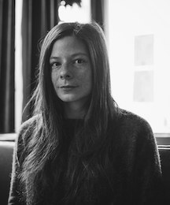

سخنرانی در مورد مصر
نویسنده: کامیل بورداس1
هفتهنامهی نیویورکر، ۲۰می ۲۰۱۹
برگردان: میترا هروی
وظیفهی او نبود که بارها و بارها توضیح دهد، که خانوادهها را بنشاند و بگوید: ”شوهر/ برادر/ پسری که میشناختینِش دیگه وجود نداره. الان دستگاهها دارن بهجاش نفس میکِشَن. و شما نمیخواین بذارین بمیره، ولی همین الانش هم اون مُرده.“ او یک جراح بود، نه مسئول اهدای عضو، نه مددکار اجتماعی، نه یک دوست. وظیفهی او این بود که یک بار بگوید. اغلب همان یک بار کافی بود — خانوادهها دستگاهِ تنفسِ مصنوعیِ عزیزشان را در عرض چند ساعت قطع میکردند. اما آدمهای خاصی بودند که رسیدگی بیشتری نیاز داشتند. بعضی برنامههای تلویزیونی که در موردشان شنیده بود، (همان برنامههایی که همسر خودش هم تماشا میکرد)، عدهای را به این باور رسانده بود که موارد حاد اصلاً حاد نیستند؛ که همهی کاری که واقعاً باید میکردید این بود که مدام از جراح درخواست کنید. و آن جراح به این دلیل که شما او را در پروندهی بیمارتان متمرکز و درگیر نگه داشتهاید، ناگهان جرقهای در ذهنش زده میشود، نصف روزی را در آزمایشگاه میگذراند، راهی برای بازگرداندن عزیزتان از زندگی نباتی پیدا میکند و در آخر هم شما را به گرمی در آغوش میکشد.
همسر یکی از بیمارانش که چند روزی بود داشت قطع کردنِ دستگاهِ شوهرش را به تعویق میانداخت، آن شب به او گفت: ”ولی اون خیلی آروم به نظر میرسه.“
پُل2 گفت: ”اون فوت کرده.“
”چهطور میتونین اینقد مطمئن باشین؟“
پُل یک بار دیگر نشانههای مرگ مغزی را فهرستوار توضیح داد.
زن گفت: ”ولی همهمون داستان آدمایی که بعد از سالها از کُما درمیان رو شنیدیم. یا ارتباط برقرار کردن با پلک زدن. شاید فقط چند روز دیگه احتیاج داشته باشه که بتونه بفهمه چهجوری پلک بزنه.“
پُل گفت: ”اون توی کُما نیس. توی وضعیت نباتی نیس. مرگ مغزی شده.“
همسر بیمار دوباره گفت که شوهرش آروم به نظر میرسه. ”انگار داره خواب میبینه. خیلی ظالمانه نیس که درست وسط خواب دیدنش دستگاه رو ازش جدا کنیم؟“
پُل، بهجای تکرار کردن حرفش در مورد مرگ مغزی، گفت: ”خب اگه واقعاً هم داره خواب میبینه، چی میشه؟ بهنظرتون چهقدر از خوابای ما خوب و دلپذیرن؟ آرزو داشتین چندتاشون تا ابد ادامه داشتن؟“
زن به این سوال فکر کرد. مدت خیلی زیادی میشد که خواب پرواز ندیده بود.
پُل با پافشاری گفت: ”مگه اکثر خواباتون ترسناک نیستن؟“
البته که الان داشت در مورد خودش حرف میزد، در مورد خوابهای وحشتناکی که میدید، و خوابهای کسل کنندهاش. خوابهایی در مورد چمدانبستنهایی که تمامی نداشت و بهخاطر اینکه به موقع نتوانسته بود وسایلش را جمع کند به سفر نرسیده بود. یا برای اینکه برگهی پرداخت مالیاتش را در خواب پیدا کند، تمامِ کِشوهایی که تا به حال در زندگیاش دیده بود را زیرورو کرده بود. خوابهای کسل کنندهای که با خستگی تمام از آنها بیدار میشد، انگار که یک روزِ کامل کاری را گذرانده باشد به جای اینکه خستگی روزش را در کند.
پُل پرسید: ”اگه همسرتون توی یه خواب بد گیر افتاده باشه چی؟ اگه شما بتونین اونو از شرّ اون خواب رها کنین چی؟“
زن شروع کرد به گریه کردن. نه برای جلب توجه و نه برای اینکه پُل لحنش را تغییر دهد. خیلی خسته بود. از زمان تصادف همسرش به خانه نرفته بود. دانشآموزانِ کلاس چهارمیاش به دیدنش آمده بودند تا به او نقاشیهای ”دلمان برایتان تنگ شده“ای که کشیده بودند را بدهند، اما او برای دیدنشان به محوطه انتظار نرفته بود، در نتیجه آنها نقاشیهایشان را برایش در قسمت پذیرش بیمارستان گذاشته بودند. روزها بود که نه حمام کرده بود، نه خوابیده بود و نه موهایش را شانه کرده بود. نمیخواست آنها را بترساند.
زن در حالی که سعی داشت به همسرش نگاه کند گفت: ”گمون کنم کلارک3 از خوابای بد حرف زده بود.“ و بلافاصله کنترلش را از دست داد و شدیدتر گریه کرد. ”هیچوقتم دوس نداش خیلی بخوابه. به نظرش وقت تلف کردن بود.“
آنها اجازه دادند کلارک آن شب از دستگاه جدا شود. زن از پُل خواست که او هم حضور داشته باشد و پُل، به جای اینکه طبق عادت همیشگی بهانه بیاورد که کار دارد، تمام مدت در کنار زن نشست. اگر زن میگفت احتیاج دارد پُل دستش را بگیرد، حتی دستِ زن را هم میگرفت. بیست و شش دقیقه بعد از اینکه دستگاه تنفس مصنوعی کلارک را قطع کردند، قلبش برای همیشه از تپش افتاد، و به محض اینکه پُل ساعت مرگ را ثبت کرد، به یکی دیگر از بیمارانش سر زد (این یکی زنده میماند)، توصیهنامهی یکی از انترنهایش را فرستاد (کاری که مدام عقب انداخته بود)، سوار ماشینش شد و به خانه رفت، آخرین سیگار را کشید و خودش را حلق آویز کرد.
•
آنا4 متوجهی جای خالی پُل در تختخوابشان نشده بود—به تنهایی از خواب بیدار شدن عادت داشت.
دانیل5 زودتر بیدار شده بود و داشت شبکهی دیسکاوری را تماشا میکرد و وانمود میکرد در مورد کوسهها، از آنچه راوی برنامه میخواست بگوید، بیشتر میداند. فی البداهه چیزهایی میگفت که اقیانوس را جالب تر نشان دهد.
دانیل همانطور که داشت از پلهها پایین میآمد به مادرش گفت: ”کوسهها بعد از اینکه به آدما حمله میکنن و میخورنشون، استخونهاشونو برای ساختن خونه نگه میدارن.“
”عزیزم من نمیخوام هیچی قبل از صبحانه یاد بگیرم. قبلاً که در موردش حرف زدیم.“
دانیل سر میز آشپزخانه به آنا ملحق شد و از او خواست صبحانهاش را سریع بخورد چون کلی حرف در مورد مصر داشت که با او بزند.
آنا گفت: ”پرزنتیشنت عالی میشه. نباید حتی به تمرین کردنش فکر هم بکنی. مهمترین قسمتِ کار توی روز ارائه اینه که ریلکس باشی.“
کلمهی ”ریلکس“ دانیل را مضطرب کرد. به نظر میآمد اخیراً همه میخواهند وادارش کنند که آن را به بخشی از زندگیاش تبدیل کند. در جلسهی قبلی تمرین پیانواش، وقتی دانیل مشغول نواختن بود، معلمش مدام شانههای او را به پایین فشار میداد و ترغیبش میکرد که عضلاتش را شل کند و شانههایش را بالا نگه ندارد و آنها را مثل یک مادهی چسبنده، یا پنبه، یا لاستیک تصور کند (معلم نمیتوانست تصمیمش را بگیرد که کدام تشبیه بهتر است) و به او میگفت اگر شانههایش را اینقدر سفت نگه دارد، هرگز پیانو را به زیبایی نخواهد نواخت. هر چند دانیل میخواست زیبا بنوازد اما کاری از دستش بر نمیآمد. حتی هیچ کاری هم که نکرده باشد، یک ساعت فشار دادن شانههایش به سمت پایین آنها را به سنگ تبدیل کرده بود. دانیل خودش را به مریضی زده بود تا بتواند جلسهی بعدی را نرود.
دانیل گفت: ”میخوام اون گرمکنم که عکس اهرام روشه رو بپوشم. واسه پرزنتیشنم.“
”گرمکنت عکس اهرام «مایا» رو داره.“
دانیل گفت: ”اونم یه بخش از سخنرانیمه. که در مورد تفاوتای اونا بگم. فکر میکنی نمیتونم فرقشونو بفهمم؟“
دانیل نه سالش بود.
آنا میخواست بگوید که اگر دانیل اینقدر راجع به جاهایی مثل مصر و خلیج مکزیک اطلاعات دارد، احتمالاً میتواند اتاق لباسشویی را پیدا کند و خودش گرمکنش را از خشککن در بیاورد، اما یک چیزی که بعداً آن را غریزهی برتر مادری میدید این حرفها را در گلویش قفل کرد و باعث شد به جای آن فقط به دخترش زبان درازی کند؛ کاری که از نظر دانیل بسیار بچهگانه بود.
دانیل هیچوقت به اتاق لباسشویی نمیرفت، چیزی که حتماً در تصمیم پُل برای انتخاب آنجا برای حلقآویز کردنش لحاظ شده بود. آنا وقتی با آن صحنه مواجه شد، جیغ نزد. آنچه را که دید باور نمیکرد و با این همه، آن لحظه تصمیم گرفت که این موضوع را از دخترش مخفی نگه دارد، او را راهی مدرسه کند و بعد با اوضاع روبهرو شود. برنامهای بدون تمرین و آماده سازی. هنوز عقلش را از دست نداده بود. ثانیههایی که در آن بود میتوانستند تا ابد تکرار شوند و در لحظات عجیب به سراغش بیایند. مثلاً در صف پرداخت سوپرمارکت به ذهنش خطور کنند— وقتیکه صندوقدار میپرسد آیا دوست دارد اسنک را همراهش داشته باشد یا آن را برایش در پاکت بگذارد. و شاید آنا همین الان هم میدانست که هرگز کارش با این ثانیهها تمام نخواهد شد، در نتیجه نیازی نبود که با تمام وجود در آن باشد در حالی که دارند به سمت گذشته سُر میخورند.
گرمکن دانیل را از خشککن درآورد، در را پشت سرش بست، و به آشپزخانه برگشت در حالی که قلبش داشت در گوشهایش میتپید، و دستهایش سرد و لرزان روی طرح گلدوزیشدهی چیچن ایتزا6 بود. سعی کرد گرمکن را روی میز آشپزخانه تا کند، نتوانست، منصرف شد، و در عوض آن را روی یک صندلی آویزان کرد. شیر آب داغ را روی دستها و ساعدش باز کرد، انگار که داغی آن میتوانست موج سرمایی که احساس میکرد دارد از بدنش عبور میکند را متوقف کند—به نظر میرسید که دستها نقطهی ورود باشند. فکر کرد که بدن پُل قرار است به سردخانه برود و دانیل نهایتاً باید در این مورد بداند—حتماً سوال میپرسد— اما نه در مورد خودکشی، نه، نباید هیچوقت در آن مورد چیزی بفهمد. آنا میخواست به اتاق لباسشویی برگردد، از آنچه که دیده مطمئن شود، اما او میدانست چه چیزی دیده بود، حتی میدانست که پُل خودش را خیس یا کثیف نکرده بود—هیچ بویی، یا لکه ای روی شلوارش یا خیسی ای زیرش نبود. حتماً احتمالش را در نظر گرفته بود و مثانه و رودهی خود را قبل از حلقآویز کردن خالی کرده بود. آنا به خودش گفت: «مثانهاش را خالی کرده...چرا دارم به این کلمات فکر میکنم؟» سراغ گرمکن برگشت و سعی کرد دوباره آن را تا کند.
دانیل گفت: ”هی، تاش نکن، میخوام بپوشمش!“ و آنا او را به اتاقش در طبقه بالا فرستاد تا آماده شود. قبل از اینکه وقت رفتن به مدرسه شود، از دانیل خواست تا حتماً مثانهاش را خالی کند، و دانیل فکر کرد که چه خندهدار است، برای اینکه آنا معمولاً میگفت ”جیش آخر قبل از رفتن“ و دانیل در حالی که داشت جیش میکرد و شورت بنفشش را تا زانو پایین کشیده بود، یک آهنگ در مورد جیش کردنش میساخت؛ آهنگی که در مورد آب در تمام حالتهای مختلفش هم بود.
هوا داشت رو به سردی میرفت، کاپشنها از انباری بیرون آورده شده بودند، و وقت آن بود که داخل کمدِ درکشوییِ راهرو آویزان شوند، جایی که به طرز خطرناکی به درِ اتاق لباسشویی نزدیک بود.
”راستی گفتم بِهت که چرا مصریا همهی اهرام رو یه طرفِ رود نیل ساختن؟“
هیچ دلیلی نداشت که دانیل بخواهد درِ اتاق لباسشویی را باز کند، اما آنا هنوز داشت فکر میکرد که اگر این اتفاق بیفتد، باید چه کار کند. آیا باید وانمود کند که او هم برای اولین بار دارد آن صحنه را میبیند؟
”بیا اینجا عزیز دلم. دیرمون شده. روز شلوغیه امروز.“
آنها به خاموش کردنِ تلویزیون یا چراغها فکر نکردند و خانه در تمام مدت پانزده دقیقهای که طول کشید تا آنا دانیل را به مدرسه برساند و برگردد اینطور ماند: در یک اتاق، شبکهی دیسکاوری داشت اطلاعاتی در مورد زندگی دریایی میداد، و در اتاق دیگر، شوهر مردهاش حلقآویز بود.
او هرگز نخواهد دانست —تیم اورژانس به او نخواهد گفت—اما پُل، علاوه بر اینکه مثانهی خود را قبل از کشیدن صندلی از زیر پایش خالی کرده بود، برای محکمکاری یک پوشک مخصوص بزرگسالان که از انباری بیمارستان برداشته بود هم پوشیده بود.
•
مشت دانیل در جیب کاپشنش، چنگ زده به فندک، ماند تا اینکه مادرش او را دم درِ مدرسه پیاده کرد، به سمت خانه پیچید و دور شد. پدرش فندک را روی پیشخوان آشپزخانه جا گذاشته بود. او قرار نبود دیگر سیگار بکشد، و دانیل به عنوان اولین نفری که آن روز صبح از خواب بیدار شده بود و فندک و زیرسیگاری را کنار ظرفشویی دیده بود، با خودش فکر کرده بود که یک لطفی به پدرش بکند—زیرسیگاری را بیرون خالی کند، فندک را در یک جای امن مخفی کند، و دفعهی بعدی که پدرش را دید، در حالیکه هیچکس حواسش نیست، آن را به او بدهد (امیدوار بود آن شب موقع شام بتواند این کار را انجام دهد: خیلی هیجانزده بود تا به پدرش بگوید در حالیکه او فکرش را هم نمیکرده، دخترش تمام روز شریک جُرمش بوده.) او عاشق نگه داشتن راز مردم بود. فرضش بر این بود که هر چه رازهای بیشتری نگه دارد، سریعتر بزرگ میشود. مشکل این بود که تا حالا عمدتاً فقط رازهای بچههای دیگر را نگه داشته بود و نمیتوانست تصور کند که آنها واقعاً به حساب بیایند. با این همه آنها میتوانستند آزمونی باشند در این مسیر برای نگه داشتن رازهای بزرگتر، رازهای واقعی. (بغلدستیاش، سوزی7، به نظر میرسید بر این باور باشد که هر فکری که دارد یک راز است —قبل از اعتراف کردن به چیزهایی مثل اینکه از بلوبری یا خواهر دوقلویش جولیا متنفر است، از دانیل قسم گرفته بود که به کسی چیزی نگوید). دانیل حتماً این امتحان را با موفقیت گذرانده است، برای اینکه این واقعاً چیزهای مربوط به بزرگترها بود، مهم بود؛ اینکه پدرش واقعاً سیگار را ترک نکرده بود، اینکه پدرش داشت به مادرش دروغ میگفت. چند شب پیش که داشت از پنجرهی اتاق خوابش به پایین نگاه میکرد، تا صدای جغدی که فکر میکرد شنیده را بررسی کند، پدرش را دیده بود که دارد در طبقهی پایین سیگار میکشد، آرنجهایش روی قاب پنجرهی آشپزخانه، بالاتنه اش به سمت بیرون پنجره. پدرش هم متوجه شده بود که دانیل او را دیده و به او اعتماد کرده بود که چیزی نمیگوید. حتی پیشنهاد حقالسکوت دادن را هم مطرح نکرده بود، تنها با یک اشارهی سادهی دست از او خواسته بود. امروز عصر وقتی مادرش حواسش نیست، فندک را به او میدهد. شاید یک کلمه هم حرف نزند و فقط به پدرش چشمک بزند. اما شاید چشمک خیلی بچهگانه باشد.
در این حین، برنامهریزی کرد که از فندک استفاده کند. یا یک چیزی را آتش بزند و یا فقط در مدرسه با آن پُز بدهد. کلِ زنگ اول با آن وَر میرفت و به محض اینکه معلم به سمت تخته برگشت، روشنش کرد و سعی کرد چیزهای مختلف را با آن آب کند (پاک کنش، یک خودکار)؛ وقتی معلمش به بوی چیزی شبیه پلاستیک سوخته اشاره کرد، هیچ کس دانیل را لو نداد، اگرچه داشتند آزمایشهایش را نظاره میکردند، اگرچه بعضی از آنها از دانیل میترسیدند و مطمئن نبودند چه کارهایی میتواند از او سر بزند.
موقع زنگ تفریح، فیزیکِ اجزای فندک را به دوست پسرش توضیح داد—سنگِ فندک، جرقه زن.
سزار8، در حالی که داشت فندک را در کف دستش سبک سنگین میکرد، گفت: ”خیلی کوچیکه. شبیه لوبیا قرمزه.“
دانیل گفت: ”بهش فندک لپهای میگن.“ میدانست که دوستپسر داشتن در این سن چندان معنایی ندارد، اما سزار مؤدبانه از او خواسته بود، و بچهها معمولاً از دانیل میترسیدند، به همین خاطر به این نتیجه رسیده بود که سزار حداقل شجاع بود. فندک را از او پس گرفت.
دانیل توضیح داد: ”پدرم به چیزای مینیاتوری علاقه داره. یه عالمه چیزای خیلی ریز داره.“ احساس کرد این ممکن است پدرش را عجیب و غریب و نابالغ جلوه دهد. پس اضافه کرد: ”اون جراح مغزه.“
سزار گفت: ”میدونم.“
دانیل گفت: ”شاید باید مدرسه رو آتیش بزنیم.“
سزار در جواب گفت: ”نه، اگه این کارو بکنیم، میریم زندان.“
دانیل گفت: ”بچهها که زندان نِمیرن. بزرگترا فکر میکنن هر کار احمقانه یا وحشتناکی که ما انجام میدیم، یا قصد و منظوری نداشتیم یا تصادفی اتفاق افتاده. ما هر کاری میتونیم بکنیم.“
همانطور که داشتند برنامهریزی میکردند تا مدرسه را به آتش بکشند، آقای شول 9، مسئول مراقب زنگ تفریح، از پشت سر دانیل پیدایش شد.
به آنها گفت: ”بچهها شما دارین با کبریت بازی میکنین؟ سریعاً بدینش به من.“
دانیل میدانست اگر بخواهد فندک را به جیب کاپشنش برگرداند، آقای شول خواهد دید، پس به جای آن فندک را در دهانش گذاشت، و بین لثهها و داخل لُپش قایمش کرد. سزار یک قدم از دانیل فاصله گرفت و کف دستهایش را به آقای شول نشان داد.
”دانیل بذار دستاتو ببینم.“
او هنوز پشتش به آقای شول بود. اگر برمیگشت، احتمالاً آقای شول برجستگیِ روی لُپش را میدید و از او میخواست دهانش را باز کند. پس فندک را به سمت سق دهانش هل داد. آقای شول شانههایش را گرفت و او را به سمت خودش چرخاند و به او گفت: ”دانیل، تو بیش از حد ساکتی. انتظار دارم توضیح مفصلّی ازت بشنوم.“
سزار گفت: ”ما هیچ کار بدی نمیکردیم. اون فقط داشت پلاستیک روی بادگیرش رو آب میکرد.“
دانیل میدانست که توجه آقای شول فقط یکی دو ثانیهی دیگر بیشتر به سزار نخواهد بود. زمانی برای فکر کردن نداشت. فندک را قورت داد.
آقای شول پرسید: ”تو چی کار کردی الان؟ دهنتو باز کن.“
دانیل دهانش را کامل باز کرد. فندک از پشت زبان کوچکش هم رد شده بود، مشکلی نبود، اما هنوز ته حلقش احساسش میکرد که داشت کلنجار میرفت از گلویش پایین برود. فکر میکرد اگر آقای شول از زاویهی درستی به داخل دهانش نگاه بیندازد، میتواند فندک را ببیند. اما او این کار را نکرد و صورت دانیل را رها کرد.
از سزار پرسید: ”چی الان قورت داد؟“
دانیل به آقای شول گفت: ”فکر میکنم کاری که الآن شما انجام دادین تعرض به حریم شخصی بود.“
سزار گفت: ”فک کنم فقط آدامس بود. اون همیشه آدامسشو قورت میده.“
زنگ به صدا درآمد. دانیل برای جویدن آدامس تنبیه شد.
•
تنبیه در دبستان پیترز10 به معنای رفتن به کتابخانه در زمان ناهار و تأمل کردن در رفتار خود بود. دانیل عادتهای خودش را در کتابخانه داشت، جای مورد علاقه اش بود. دیگر میدانست جای هر چیزی کجاست. پس مستقیم به سمت قسمت حیاتوحش رفت و کتابی در مورد کوسهها برداشت. میخواست بداند آیا آنطور که صبح به مادرش میگفت، کوسهها واقعاً خانه میسازند. تقریباً مطمئن بود که خانه نمیسازند، اما شاید کار دیگری میکردند که چشمگیر باشد. دانیل همچنین داشت به این فکر میکرد که چگونه به پدرش توضیح دهد که فندک را بلعیده است. میتوانست الان در معدهاش احساسش کند، یا فکر میکرد که میتواند. فرضش بر این بود که پدرش مجبور خواهد شد شکمش را در حمام بشکافد تا فندک را پیدا کند و این باعث عصبانیتش خواهد شد که در خانه هم مجبور است همچنان کار کند. او دیگر چشم انتظار زمان شام نبود.
ظهر، مدیر مدرسه همراه با خالهی دانیل، اِستِر11، وارد کتابخانه شد.
مدیر، در حالی که روی دو پا نشسته بود تا همقد دانیل شود، به او گفت: ”دانیل، خالهت اومده دنبالت. یه اتفاقی افتاده. پدرت توی بیمارستانه.“
دانیل گفت: ”بابای من همیشه توی بیمارستانه.“ اگرچه میدانست منظور مدیر این نبود.
مدیر گفت: ”برای ایشون یه اتفاقی افتاده.“
دانیل گفت: ”خب من نمیتونم همینجوری برم که. بعدازظهر پرزنتیشن دارم. پرزنتیشن در مورد مصر.“
”فکر میکنم خانم مِیزی12 با تغییر تاریخش موافقت میکنه.“
•
شبی که پُل مُرد، آنا دوازده هزار دلار در لاتاری برنده شد. تنها چند روز بعد متوجه شد، بعد از اینکه پُل به خاک سپرده شده بود، در یکی از آن عصرهایی که آرزو میکرد ای کاش مراسم خاکسپاری دیگری را تدارک ببیند. البته که دوست نداشت کس دیگری بمیرد، اما انتخاب آخرین کراوات، آهنگهای زیبا که در طول مراسم پخش میشود—همهی اینها او را از فکر کردنِ زیاد به معنا و مفهوم زندگی دور کرده بود. به علاوه، هیچ کس (یا آنطور که او فکر میکرد) در حین برنامه ریزیِ مراسم خاکسپاری نمرده بود. گمان میکرد برنامهریزی این مراسم همانند زدن دکمهی مکث روی هر چیز افتضاح دیگری است که ممکن است برای آدم اتفاق بیفتد. اما حالا که دیگر متن برنامهریزی شدهای وجود ندارد که دنبال کند، حالا که جسم به خاک سپرده شده، معنا و مفهوم تنها چیزی بود که برای تعمق وجود داشت. با پُل خوشبخت بود. پُل توانسته بود او را خوشبخت کند در حالیکه ایدهای مبهم از واژهی ”خودش“ و نیازهایش داشت. این بزرگوارانه بود یا احمقانه؟ آیا از پُل توقعِ بیشازاندازه داشت؟ آیا اگر پُل او را نداشت که خشنود کند یا برایش تظاهر کند، از زندگی خودش لذت بیشتری میبرد؟ چرا یک یادداشت از خودش نگذاشته بود؟ میدانست چرا یادداشتی نگذاشته: پُل متنفر بود از اینکه حرفش را تکرار کند. محصور و مدوّر بودن چارچوب ذهن افسردهاش، همراه با شیوهای که صحبت میکرد (زیر لب تند تند حرف زدن)، همهی اینها همان موقع هم مجبورش کرده بود که بیش از اندازهای که تحملش را دارد حرفش را تکرار کند. همچنین: تکراری بودن خودِ زندگی.
از زمان مراسم ختم، رادیو را با صدای خیلی بلند گوش میداد تا روی افکار بقیه تمرکز کند. وقتیکه یک نفر در برنامهی ”با احتساب همه چیز“13 به نکتهای در مورد منطقهی کارائیب اشاره کرد، او یاد بلیط لاتاری در کیفش افتاد. خودش هرگز رویای کارائیب را نداشت، اما گمان میکرد بقیهی شرکتکنندگان لاتاری فانتزیِ مشترکی از یک قایقِ تفریحی سفید که در آنجا لنگر انداخته، دارند. هر هفته در لاتاری شرکت میکرد، هرچند پُل درآمد خوبی داشت و او هم شغل خودش را داشت (املاک و مستغلات). وقتی پُل به او میگفت اینها حقهبازی و پول هدر دادن است، آنا میگفت «من به امکانِ شگفت زده شدن، هرچند هم ناچیز، احتیاج دارم». پشیمان بود که این حرفها را به او زده بود.
دوازده هزار دلار. چیزی تقریباً معادل آنچه برای دفن پُل هزینه شده بود. به این فکر افتاد که یک چیز خوب برای دانیل بخرد، مثل یک استخرِ پیشساختهی روکار یا یک سگ. اما میدانست که این کار هرگز نمیتواند آن قدرها هم خوب باشد برای اینکه همیشه تداعی کنندهی این بُرهه از زندگی دانیل میشد، ”سکتهی قلبی“ پدرش. بلیط برنده را زیرِ آهنربای شیکاگو روی درِ یخچال گذاشت. شیکاگو—شهری که اهل آنجا بود، نه گروه موسیقی. یک نفر در رادیو داشت در مورد نحوهی آمیزشِ پرندگان صحبت میکرد. دانیل در حالیکه خون از چانهاش میچکید وارد آشپزخانه شد.
•
وقتی شکم دانیل را باز کردند، نه تنها آن فندک مینیاتوری بلکه سه قطعه لِگو، یک تیله و یک جاسوئیچی چراغقوهای هم پیدا کردند. لگوها به دلیل تماس با مایعات معدهاش کِدر و بیرنگ شده بودند، اما فندک بیشترِ درخشش خود را حفظ کرده بود. چراغقوه هنوز کار میکرد. جراح از آنا پرسید آیا میخواهد آن اقلام را (آنطور که او آنها را خطاب کرد) نگه دارد، و آنا گفت بله. فکر میکرد وقتی دانیل به هوش میآید، شاید دوست داشته باشد که آنها را داشته باشد. گمان میکرد دانیل فندک را بعد از اینکه متوجه مرگ پدرش شده بلعیده، به عنوان راهی برای ابراز غم و اندوهش. آنا به پیدا کردن توجیهی برای بلعیدنِ لگوها و تیله و چراغقوه خیلی فکر نکرد. از جراح پرسید آیا باید نگران این واقعیت باشد که دخترش اجسام را میبلعد؟
او گفت: ”منظورم اینه که میدونم این کار طبیعی نیس. اما چهقدر غیر طبیعیه؟ آیا میتونه فریادی برای کمک خواستن باشه؟ خیلی غمگینه، میدونم اینو، ولی فکر میکنین افسردگی داشته باشه؟“
جراح گفت: ”خب، من متخصص سلامت روان نیستم، اما بیست و هشت ساله که دارم اجسام خارجی از داخل بدن مردم در میارم. در اغلب موارد، این افراد به طرز عجیبی از نظر روانی با ثبات به نظر میرسند. تا اونجا که من میتونم بگم، اونا فقط فکر میکنن این کار باحال و سرگرم کنندهس.“
آنا سالها به همین تشخیص بسنده کرد.
•
دانیل در سن جوانی از خانهی مادرش نقل مکان کرد اما نه برای اینکه به دانشگاه برود. آنا فکر کرد خانه را بفروشد، اما نفروخت، خود را از شغل بدون انرژی و خلاقیتش زودتر بازنشسته کرد، کلاسهای بافندگی و سفالگری رفت و هرگز دوباره ازدواج نکرد. دانیل بعد از هر باری که با کسی به هم میزد، برای زندگی پیش مادرش برمیگشت، گاهی برای چند روز، گاهی برای هفتهها. وقتی با آرمان14 به هم زد، مادرش میدانست که قرار است مدت طولانیتری پیش او بماند، برای اینکه آرمان نه تنها دوستپسر و همخانهایش بود، بلکه کارفرمایش هم بود— دانیل هم آرمان و هم شغلش به عنوان کارمند پذیرش در هتل آرمان را به طور ناگهانی رها کرد. دو ماه از اینکه به خانهی مادرش اسبابکشی کرده بود میگذشت و او هنوز شغل جدیدی پیدا نکرده نبود، تا آنجا که مادرش میدید، به اندازهی کافی دنبال کار نمیگشت. به نوشتن دفترچهی خاطرات روی آورده بود، چیزی که آنا را نگران میکرد. مگر نوشتن خاطرات روزانه مخصوص آدمهای افسرده نیست؟ آیا همهی آدمهای افسرده به خودکشی فکر میکنند؟ به این فکر کرد که وقتی دانیل خانه نیست، خاطراتش را بخواند. اما دانیل خیلی بیرون نمیرفت، و وقتی میرفت، آنا خودش را قانع میکرد که در مورد درونیات دخترش جاسوسی نکند. در مورد پُل که این اطلاعات هرگز کمک چندانی نکرده بود.
البته که دانیل به تعداد انگشتان دست به خودکشی فکر کرده بود—چه کسی هست که فکر نکرده باشد— اما بیشتر به این خاطر که حواسش را از کسالت و یکنواختی کارش در لابی هتل پرت کند. ”اگه همین الان خودمو توی این آسانسور بُکُشم، به کار اینجا چه لطمهای میخوره؟“—چیزهایی از این دست. بعدازظهرهای طولانی زیادی بود که آرزو کرده بود ای کاش به دنیا نیامده بود، اما این فرق داشت. فکر کردن به خودکشی نبود؛ بیشتر از تنبلی نشأت میگرفت یا از میلِ تحققنیافتهای برای چُرت زدن. یک روز صبح وقتی که مادرش از مغازه به خانه برگشت، او داشت آرزو میکرد که ای کاش به دنیا نیامده بود. روی مبل داشت در مورد آیین تعدیل شدهی بودایی میخواند به جای اینکه دنبال کار بگردد.
مادرش پرسید: ”چی داری میخونی؟“
دانیل گفت: ”نمیدونم.“ و کتاب را نصفه بست تا جلدش را ببیند. ”یه چیزی در مورد پیدا کردن آرامش درون و لذت خالص از طریق بودا. همونجا روی میز بود.“
آنا گفت: ”اوه! اون کتاب منه در مورد آرامش درون!“
”منطقیه.“
”چی منطقیه؟“
”خب، کتاب مال من نیست، و شما تنها نفر دیگهای هستی که اینجا زندگی میکنه.“
آنا گفت: ”آها. فهمیدم.“ چند ثانیهای سکوت کرد. ”فکر کردم منظورت یه چیز دیگه بود. اینکه منطقیه که من کتابی در مورد آرامش درون بخونم چون آدم حوصلهسربَری هستم.“
دانیل گفت: ”من فکر نمیکنم تو آدم حوصلهسربَری هستی. و در مورد آدمای معنوی، به نظرم بوداییها آدمای خوبی هستن.“
آنا گفت: ”منم همینطور فکر میکنم. خوشحالم که دربارهی یه چیزی همعقیدهایم.“
دانیل از مادرش پرسید چرا دارد در مورد آرامش درون میخواند. آنا توضیح داد که در واقع در مورد آرامش درون نمیخواند—حداقل نه هنوز. چند روز پیش کتاب را در اتوبوس پیدا کرده بود و از بقیهی مسافرها پرسیده بود که آیا این کتاب مالِ آنهاست یا نه. اما هیچ کس جز اینکه اندکی به سمت او نگاه کند تا حرف زدنش را به رسمیت بشناسد، پاسخی نداده بود.
او گفت: ”مردم واقعاً خیلی بی ادبن.“
مادر و دختر روی این مسئله هم با یکدیگر موافق بودند اما دانیل چیزی نگفت. گفتوگو کردن واقعاً ارزشی نداشت وقتی با طرف مقابل هم عقیده هستی.
آدمهای بیادب برای دانیل یک معما بودند، برای اینکه مؤدب بودن راحتترین چیزی بود که میتوانست به آن فکر کند. تمام کاری که باید انجام میدادید این بود که بدانید چه زمانی به کسی نگاه کنید و چه زمانی نه، و تمایزِ بین این دو به نظر بسیار آسان بود. دانیل فکر میکرد زمانی که در بخشِ ویژگیهای مثبتِ شخصیتی کمی احساس کمبود میکنید، ادب از ویژگیهایی است که میتوانید به سرعت کسبش کنید. پس هر وقت با آدمهای بی ادب مواجه میشد، این طور استنباط میکرد که آنها بر این باورند که به اندازهی کافی محاسن دارند که دیگر نیازی نمیبینند تلاش اضافیِ دیگری بکنند.
آنا از دخترش در مورد کتاب آرامش درون پرسید: ”جالبه؟“
”میتونستی همون جا که بود بذاریش بمونه.“
دانیل متوجه شد که لحن صدایش کمی دلخور و عصبانی شده، اگرچه مادرش در آن لحظه مشخصاً دلخورش نکرده بود. دانیل دید که آنا دارد آماده میشود که تنهایش بگذارد، و متوجه شد زمانی که مادرش بمیرد، مهم نبود چقدر بعدتر، این لحظه را که نسبت به مادرش از روی عادتِ محض بی توجهی نشان داده به یاد خواهد آورد و تا زمانی که نوبت مرگ خودش برسد، احساس ناگواری نسبت به آن خواهد داشت.
دانیل گفت: ”مسئله فقط اینه که اگه من یه بودای واقعی بودم، بهِم بر میخورد که ببینم مردم انگار الآن معتقدن که بودا در درجه اول دنبال خوشبختی بوده و نه نیستی.“ و باعث شد مادرش که داشت از اتاق بیرون میرفت، بایستد.
آنا گفت: ”مسلماً به خوشبختی بیشتر از اونچه که باید، بها داده شده.“ میدانست که این چیزی است که باید به یک آدم افسرده بگویی تا او خیلی نسبت به بقیهی دنیا احساس بیگانگی نکند.
دانیل گفت: ”و نیستی کم اهمیتتر از اونچه که هست جلوه داده شده.“
آنا گفت: ”فکر نمیکنم از نظر ماهیتی اصن بشه نیستی رو ارزیابی کرد.“
دانیل گفت: ”من نسبتاً مطمئنم که دست کم گرفته شده.“
آنا گفت: ”خوبی عزیزم؟ میدونم مدت زیادی با آرمان بودی و میفهمم که سخته، اما تو داری این روزا منو یه کم نگران میکنی.“
”من خوبم مامان. مطمئناً برنامهای ندارم که بالاسرِ عکس آرمان رگ دستمو بزنم.“
”کی در مورد رگ زدن حرف زد؟“
دانیل گفت: ”داشتم شوخی میکردم. گفتنِ کلمهی نیستی جالب بود، مثل اینکه اگه من وجود نداشتم مجبور نبودم الان دنبال یه کار احمقانه بگردم، و این جور چیزا.“
”حتماً نباید یه کار احمقانه باشه عزیزم. تو هنوز خیلی جوونی، هنوز وقت داری دنبال چیزی بگردی که واقعاً شیفتهش هستی.“
آنا پشیمان شد که از واژهی ”شیفته“ استفاده کرده بود. کلمهی خیلی سنگینی بود. آن را در تکان چهرهی دانیل هم دید. دانیل اخیراً وقت زیادی را صرفِ فکر کردن در مورد مسیرهای کاری مختلف کرده بود و اینکه مردم چگونه نهایتاً نگاهشان به دنیا را بر اساس شغل خود شکل میدهند—چطور ریاضیدانان فکر میکنند همه چیز عدد است و نویسندگان فکر میکنند همه چیز داستان است. حتی آرمان تلاش کرده بود او را متقاعد کند که پذیرش غریبهها به اتاقهای یکسان و تسویه حساب کردن با آنها، قبل از خروج، مهم است. میگفت: ”زندگی مثل یه لابی هتله.“ دانیل کنجکاو بود بداند آیا مأموران جمعآوری زباله به مردم میگویند که همه چیز آشغال است؟ چیزی که در ذهنش نسبت به هر آنچه که تا کنون شنیده بود به واقعیت نزدیکتر بود.
دانیل هیچوقت نخواسته بود چیز خاصی باشد یا کار خاصی انجام دهد. همیشه از آموختن لذت برده بود اما آن اطلاعات هرگز به یک حرفه تبدیل نشده بودند. همیشه جلوتر از منحنی یادگیری بود، اما در نهایت دور خودش چرخیده بود و خود را در یک حلقه محصور کرده بود در حالی که همکلاسیهای دیگرش که کنجکاوی و هوش کمتری نسبت به او داشتند، از این منحنی به عنوان مسیری برای دسترسی به انواع مشاغل بهره برده بودند. بعضی از آنها، مثل همسر سزار، حتی حرفهی خود را ابداع کرده بودند. او یکی از اولین طراحان اپلیکیشنی بود و با ایدهی یک اپلیکیشن برای دوست یابی حیوانات خانگی خودش و سزار را ثروتمند کرده بود.
دانیل گفت: ”بابا شیفتهی کارش بود؟ میدونم که تو اونقدا از شغلت راضی نبودی.“ او در مورد پدرش خیلی حرف نمیزد اما در موردش سؤال میپرسید، چیزی که آنا همیشه سعی میکرد تا حد امکان صادقانه جواب دهد تا دروغ بزرگی که در مورد مرگ او گفته را جبران کند.
”فکر کنم اکثر قسمتای کارشو دوس داشت. البته پرستارا و مریضا اعصابشو خورد میکردن... خیلی هم عاشق سروکله زدن با خونوادهها نبود. ولی فکر کنم درمان کردن آدما رو دوس داشت. نمیدونم.“
دانیل گفت: ”بعضی وقتا که در مورد بابا حرف میزنی، اینجور به نظر میاد که اون شاید یه کم آدمِ بیشعور و رو اعصابی بوده.“
”همهی منظورم اینه که اونم تردیدای خودشو داشت، مثل هر آدم منطقی دیگهای. هیچ کی همیشه صددرصدِ مواقع راضی نیس.“
این یک توضیح سیاستمدارانه بود. پُل حتی بیست درصد مواقع هم راضی نبود، نه روز ازدواجش، نه وقتی که به یک بیمار سلامتی را بازمیگرداند، نه وقتی با تأمین مالی پروژهی تحقیقاتیاش موافقت میشد، نه حتی روزی که دانیل به دنیا آمد. هر روز، حتی یک روز خوب، رنجش یا چالشی بر سر راه خوشبختی و رضایت نهایی بود، چیزی که معتقد بود بهدست خواهد آورد—یا حداقل به نظر میرسید که به این موضوع باور داشته باشد. لحظات کوچکِ لذتبخش برایش اهمیتی نداشتند. او تمامی لذت را میخواست، همه را یک جا، در پایان زندگیاش.
دانیل پرسید: ”مرد مؤدبی بود؟“
آنا گفت: ”خیلی. خیلی مؤدب.“
دانیل عطسه زد و قلبش تنگ شد، یا چنین حسی به او داد. کف دستش را محکم روی قفسهی سینهاش فشار داد، بالای سینهی چپش، جایی که فکر میکرد قلبش باشد.
”حالت خوبه عزیزم؟“
”چیزی نیست. احتمالاً فقط باید دوباره برم دکتر قلب که ببینم نارسایی دریچه میترالم در چه وضعیتیه.“
”دکتر دفعهی پیش به نظر نمیرسید نگرانش باشه. نگفت شاید توی بیست سال آینده به مشکل تبدیل بشه؟ احتمالاً موقع عطسه فقط یه عضلهت کشیده شده.“
دانیل گفت: ”حتماً.“
او در مورد سلامتی و بیماریاش وسواس نداشت، اما بیش از آنچه که به مادرش میگفت برای چکاپ قلبش پیش دکتر میرفت—تا آنجا که او میدانست، یک قلبِ معیوب پدرش را به کشتن داده بود. دانیل بعد از اینکه احساس انقباض در قفسه سینهاش کمتر شد گفت: ”به هر حال. در مورد کار، سزار بهم پیشنهاد داده که به خودش و زنش روی پروژهی هتل حیوانات خونگی کمک کنم، به خاطر تجربهم و این چیزا.“
البته که آنا در مورد ترسی که دانیل از مشکل قلبی داشت، احساس گناه میکرد—خودش این ترس را به او القا کرده بود—اما بهتر بود که فرزندش نگران یک مشکل ژنتیکی که وجود خارجی نداشت باشد تا اینکه نگران یک مشکل واقعی باشد؛ این گونه خودش را دلداری میداد. میدانست که بعضی افراد خودکشی را یک حالت ژنتیکی نمیدانند، اما این را هم میدانست که در چهار نسل خانوادهی همینگوی15 پنج مورد خودکشی اتفاق افتاده بود. آن چه که شبها بی خوابش کرده بود این پرسش بود که اگر اولین مورد خودکشی به صورت یک راز باقی مانده بود، آیا همچنان همین تعداد خودکشی وجود داشت؟
آنا گفت: ”عالیه. حیوونا. حیوونا فوق العادهان. یه کمک عاطفی واقعیان.“
”این که میگی چه ربطی به این چیزا داره؟ سزار و اِستِف16 میخوان با اونا مثل مصرفکنندگان معمولی آمریکایی برخورد کنن، تا اونجا که من برنامه شونو متوجه میشم.“
”با این حال، من فکر میکنم برات فوق العادهس که دور و بر حیوونا کار کنی. همیشه حیوونا رو دوس داشتی.“
دانیل کاملاً از این قضیه مطمئن نبود. هرگز حیوانی ندیده بود که با آن ارتباط نزدیکی برقرار کند، اکثراً آنها را از کتابها و تلویزیون میشناخت. در هر صورت، در مورد فرصت شغلی هم داشت دروغ میگفت. استف برای پروژهاش به کمک احتیاج نداشت. آخرین خبری که داشت این بود که سزار و زنش اوضاعشان خیلی خوب نبود.
آن روز بعدازظهر، در حالی که مادرش بیرون بود، به سزار تلفن زد که او را آماده کند تا در صورتی که تصادفاً مادرش را دید، به خاطر او دروغ بگوید.
سزار گفت: ”حتماً. به خوش اخلاق ترین زنِ روی زمین دروغ خواهم گفت. دوباره.“
سزار در ده سالگی با دانیل به هم زده بود. به دانیل گفته بود که تو بیش از حد غمگینی و دانیل آن را درک کرده بود. دانیل او را برای اینکه شهامتِ گفتن این موضوع را داشت تحسین کرده بود. هر چند، سزار به دانیل گفته بود برای اینکه با هم دوست معمولی بمانند آدم بیش از حد غمگینی نیست. دانیل فکر میکرد که سزار دارد به سادگی او را به حال خود رها میکند اما سزار به حرفش پایبند بود و آنها در تمام دورهی راهنمایی و دبیرستان دوستان نزدیکی بودند. حتی در طول دوران دانشجوییِ سزار در شهر گلاسگو هم ارتباطشان را با هم حفظ کرده بودند. سزار رفته بود تا ادبیات بخواند اما جایی در این مسیر نجّار شده بود. آن گونه که خودش توصیف میکند: نجّار «شده» بود، نه اینکه «تصمیم» گرفته باشد مسیر کاریاش را عوض کند. یک روز، فردی دانشگاهی علاقهمند به ساختوساز بوده، و روز بعد یک نجّار با علاقه به ادبیات عصر ویکتوریا. اما همچنان قبل از بازگشت به آمریکا و شروع حرفهی چوبِ خود، فارغ التحصیل شده بود.
سزار گفت: ”میدونی اخیراً دیگه به کی در مورد تو دروغ گفتم؟ آرمان لعنتی! روز تولدم بِهم «زنگ زد». پیامک نفرستاد. زنگ زد!“
”چی بهش گفتی؟“
”بهش گفتم حالت خیلی خوبه.“
”حال من خیلی خوبه.“
سزار در لابی هتل آرمان، قفسههای کتاب از کف تا سقف ساخته بود و آرمان آنها را با کتابهایی که به صورت عُمده خریده بود پر کرده بود و آن کتابها را بر اساس رنگشان در قفسهها چیده بود.
دانیل پرسید: ”شما قراره الان با هم رفیق باشین؟“
”احتمالشو نمیبینم، نه.“
”خوبه. فقط مدام بِهت فشار میاره و بیچارهت میکنه که چقد منفی هستی و زندگی یه لیوان نیمه پُره یا هرچی. خدا میدونه منو که در این مورد بیچاره کرد.
سزار گفت: ”خب، واقعیت اینه که تو هم همچین آدم مثبت و امیدواری نیستی.“
”خفه شو!“
”به نظرم خنده داره که همیشه دنبال پسرای خیلی خوشحالِ سخت نگیرِ بی خیال هستی در صورتی که خودت تقریباً بدبینترین آدمی هستی که من میشناسم.“
دانیل گفت: ”در زندگی به تعادل نیاز هست. به علاوه، من واقعاً انقد بدبینم؟ یا فقط دنیا رو همونجوری که هست میبینم؟“
سزار گفت: ”تو «دوس داری» احساس بدبختی کنی. حتی براش تلاش مضاعف هم میکنی.“
دانیل فرضیهاش در مورد حوزههای کاری را روی سزار امتحان کرد؛ اینکه چگونه باور داشت آدمها خودشان را متقاعد میکنند که آن مسیر شغلی که انتخاب کردهاند معنادارترین بوده و شاید به همین دلیل هم بوده که تا به حال با کسی کنار نیامده است. سزار در موردش فکر کرد، اما نه خیلی طولانی.
گفت: ”آره، فکر نمیکنم حق با تو باشه—اینکه یه ریاضیدان همه چیزو از منشور ریاضی میبینه یا هر چی. اتفاقاً یه نقد ادبی در موردش خوندم. در مورد این صحبت میکرد که مثلاَ چهجوری کشاورزا هیچوقت در قالب استعارههای کشاورزی فکر نمیکنن و اینکه فقط نویسندهها فکر میکردن که کشاورزا این کارو میکنن.“
دانیل گفت: ”آرمان تقریباً فقط با استعارههای مربوط به هتل صحبت میکرد.“
”حرف زدن با فکر کردن متفاوته.“
”منظورت اینه که تو هیچوقت در قالب استعارههای نجّاری فکر نمیکنی؟“
”مثلاً چی؟“
”نمیدونم. مثلاً هیچوقت به خودت نمیگی این چوب تلف کردن بود به جای وقت تلف کردن؟ یا فلانی فقط میدونه چهجوری در امتداد طولِ بافت برش بزنه یا هر چی؟“
”اینا رو همین الان از خودت در آوردی؟“
”یا باید صبر کنی خاک اره از آسیاب بیفته...یا یه همچین چیزی....نمیدونم. عیسی مسیح از استعارههای نجّاری استفاده نمیکرد؟“
”ممکنه در انجیل ازونا استفاده کرده باشه، من کل کتاب رو نخوندم، اما من میگم: در این صورت، نویسندهها مجبورش کردن که ازونا استفاده کنه. عیسی مسیح خودش هیچوقت در قالب استعارههای نجّاری فکر نمیکرد.“
دانیل یک آن به مصر فکر کرد، نه به اهرام مصر بلکه به چیزی که در کتاب تعبیر خواب مصری خوانده بود. پدرش هجده سال پیش به او راجع به آن گفته بود، زمانی که دانیل داشت برای آمادهکردنِ پرزنتیشن مدرسه مطلب جمع آوری میکرد—اینکه چگونه معابدِ خوابِ مصریها معابد شفا هم بوده، چیزی شبیه بیمارستان. در دایرة المعارف آن را جستوجو کرده بودند. کتاب تعبیر خواب فهرست بلندی از خوابهایی بود که معتقد بودند یا خوشیمن و مبارکند و یا شوم و بدیمن. و آنها نگاهی به مثالهایش انداخته بودند که دانیل یکی از آنها را به یاد میآورد: «خوشیمن و مبارک—اگر فردی در خواب ببیند که دارد چوب اره میکند، نشانهی این است که دشمنانش نابود میشوند». او و پدرش به توصیفات خواب خندیده بودند، چون خوابها خیلی خاص بودند و بسیار بی شباهت به خوابهایی که خودشان تا به حال دیده بودند یا قرار بود در آینده ببینند (خوابِ اندازه گیری گندم و جو، خوابِ ذبح کردن اسب آبی، خوابِ تصویر خود را در آینه دیدن) و احساس کرده بودند از این دنیا مصون هستند، هم از خوبی و هم از بدیهایی که میتوانست برایشان اتفاق بیفتد.
گاهی اوقات شگفت زده میشد از اینکه چهقدر چند روزِ منتهی به مرگ پدرش را به یاد میآورد، انگار مغزش میدانست که باید توجه بیشتری به خرج دهد. عجیبتر این بود که همهی آنچه که در هفتههای بعد از مرگ پدرش رخ داده بود در نظرش محو و تار بود. میدانست که بعد از مراسم خاکسپاری به مدرسه برگشته بود، و در یک مقطعی هم برای عملِ خارج کردنِ فندک به بیمارستان رفته بود، اما هیچ تصویر و خاطره ای از آنها نداشت. به یاد میآورد آن روز که مدیر مدرسه با خبر مربوط به پدرش به کتابخانه آمد، او داشت کتابی در مورد کوسهها ورق میزد. آن کتاب را بعداً امانت گرفته بود ولی یادش نمیآمد که آن را واقعاً خوانده باشد. هیچوقت آن کتاب را پس نداد. هنوز آنجا بود، در قفسهی قدیمیِ اتاق خوابش.
از سزار پرسید: ”یادت میاد من اصن توی مدرسه در مورد مصر سخنرانی کرده باشم؟“
میتوانست خود را مجسم کند که در مورد مومیاییها تحقیق میکرد یا واژهی ”خشک کردن“ را در فرهنگ لغت جستوجو میکرد، اما نه ایستادن مقابل یک جمع برای سخنرانی و ارائهی یافتههای خود را.
سزار گفت که او آن سخنرانی را انجام داده بود، اما خاطر نشان کرد که در آن زمان هنوز با هم دوست دختر دوست پسر نشده بودند—که سخنرانی در مورد مصر یکی از اندک چیزهایی بود که باعث شده بود سزار از او خوشش بیاید.
بعد از اینکه تلفنش با سزار تمام شد، روی تخت دراز کشید و در مورد کوسهها خواند. کوسهها البته که خانه نمیساختند. باید در حرکت مداوم میبودند تا از طریق آبششهایشان تنفس کنند. بعضی از آنها هرگز نمیخوابیدند. این امکان وجود داشت که کوسهای غرق شود. دانیل فکر کرد که اگر این کتاب را قبلاً خوانده بود، حتماً این واقعیت را به یاد میآورد.
دانیل میدانست که مادرش دارد در مورد مرگ پدرش دروغ میگوید. او هرگز نشنیده بود که یک فرد جوان هنگام خواب با آرامش از دنیا رفته باشد، آنگونه که مادرش تعریف کرده بود که اتفاق افتاده. آنا اصرار داشت که سکتهی قلبی پدرش را بیدار نکرده بود، اما چنین چیزی برای دانیل که میدانست بوی گرم کردن نان هم از خواب بیدارش میکند، اصلاً منطقی به نظر نمیرسید. او بیدار شده و عذاب کشیده بود. یقین داشت.
شنید که آنا برگشته و دارد تمام پنجرههای طبقهی اول را باز میکند. نسبت به گردش هوا وسواس داشت، اما نگران دزدی هم بود، در نتیجه در طول روز چندین بار پنجرهها را باز و بسته میکرد. دوست داشت درها هم باز باشند. بعد از چند دقیقه درِ اتاق خواب دانیل را میزد و اخباری به صورت تصادفی از دنیای بیرون به او میداد، فقط به این بهانه که دانیل را چک کند و موقع برگشتن ”فراموش“ کند درِ اتاقش را ببندد. این ”فراموش کردن“ در گذشته دانیل را دیوانه میکرد. وقتی نوجوان بود، اغلب عکسالعملش این بود که درِ اتاقش را محکم به هم بکوبد، اما تنها تأثیر این کار این بود که آنا سرش را بین در و چارچوب برگردانَد و از دانیل بپرسد، ”عزیزم چیزی گفتی؟“—و بعد از آن دانیل سر مادرش فریاد میزد که در را یک بار برای همیشه ببند و آنا میپرسید چرا اینقدر بدجور احتیاج داری درِ اتاقت بسته باشد. دانیل هیچوقت پاسخ قانع کنندهای برای آن نداشت. او هیچوقت هیچ کار خصوصی یا شرم آوری انجام نمیداد. همیشه مشغول مطالعه بود، تکالیفش را انجام میداد، در تختخوابش فکر میکرد. این روزها گاهی اوقات به این مسئله فکر میکرد که شاید اگر درِ اتاقش تمام این سالها بسته بود، زندگی هیجان انگیزتری میداشت. یا حداقل شخصیت جالب تری در خود پرورش میداد. عمل کردن به گونهای که هر لحظه ممکن است کسی وارد اتاقش شود او را به موجودی کسل کننده تبدیل کرده بود. احتمالاً. همانطور که داشت صدای آنا را میشنید که مشغول باز کردن پنجرهی آشپزخانه در طبقهی پایین بود، به این اصطلاح فکر کرد که ”آن کشتی دیگر بندر را ترک کرده“17 و اندیشید آیا هیچ ملوانی تا به حال به آن فکر کرده. آشپزخانه درست زیر اتاق خوابش بود. سالها پیش، از پنجره به بیرون نگاه کرده بود و پدرش را، در حالیکه آرنجهایش روی قاب پنجره بود، آن پایین مشغول سیگار کشیدن دیده بود. صدایش کرده بود و او چپ و راست را نگاه میکرد تا ببیند صدا از کجا میآید. مجبور شده بود بگوید ”این بالام!“ تا بالا را نگاه کند. به نظر میرسید تعجب کرده باشد از اینکه میبیند دخترش آنجاست، در اتاق خواب خود، متعجب از اینکه طراحی داخلی خانه شان باید عواقب مستقیم روی دنیای خارج داشته باشد، روی اینکه پنجرهی چه کسی به چه چیزی مشرف است. به دانیل نگاه کرده بود و انگشت اشارهاش را به علامت سکوت روی لبانش گذاشته بود، و دانیل سرش را به نشانهی تأیید تکان داده بود و وانمود کرده بود دارد زیپ دهانش را میکشد تا به پدرش اطمینان دهد که رازش پیش او امن است. دانیل اغلب به این حرکت فکر میکرد، اینکه چگونه شاید پدرش فقط داشته از او میخواسته که خفه شود و به تخت خوابش برود، نه اینکه رازی را نگه دارد.
دانیل حالا چشمهایش را بست، امیدوار بود خوابش ببرد قبل از اینکه مادرش بالا بیاید تا به او بگوید برای شام چه دارند یا در کلاس بافندگی چه چیزی یاد گرفته است. به قلبش گوش داد—نه به قلب استعاره ایش بلکه به صدای غیرمعمول واقعی آن، دریچه ای که نشتیاش باعث میشد خون را پس بزند، به میزانی که فعلاً نگرانکننده نبود.
زمانی که آنا وارد اتاق شد، دانیل یا خواب بود یا خودش را به خواب زده بود. آنا دقیقهای در آستانهی درِ اتاق ایستاد، به چشمهایش فرصت داد تا به تاریکیِ اتاق عادت کنند، و اجسام خاکستری را از هم تشخیص دهند، قفسههای کتاب، میز تحریر، سبد رخت و لباس، تا اطمینان حاصل کند قفسه سینهی دخترش همچنان با فواصل زمانی منظم زیر پتویش بالا و پایین میرود.
پایان ∴
دربارهی نویسنده

کامیل بورداس رماننویس، نویسندهی داستانهای کوتاه و مترجم است. وی در سال ۱۹۸۷ میلادی در فرانسه متولد شد، دوران کودکی و نوجوانی خود را در فرانسه و مکزیک گذراند و در سال ۲۰۱۲ به آمریکا مهاجرت کرد. دو رمان اول خود را به زبان مادریاش، فرانسوی، نوشت و رمان سومش به نام ”چگونه در جمع رفتار کنیم“، که در سال ۲۰۱۷ به چاپ رسیده، به زبان انگلیسی است. آثارش در مجلات متعدد معتبری همچون نیویورکر منتشر شده است. وی در حال حاضر به عنوان استادیار دانشگاه فلوریدا در حوزهی نویسندگی خلاق مشغول به کار است.
”سخنرانی در مورد مصر“ در نسخهی ۲۰ ماه می ۲۰۱۹ در هفتهنامهی نیویورکر منتشر شده است. این داستان از پنهانکاری، دروغ و رازهای خانوادگی می گوید: آنچه که پس از خودکشی پدرِ خانواده آغاز می شود، وقتی مادر ِخانواده در تصمیمی آنی، در مورد دلیل مرگ همسر به دختر ۹ سالهشان دروغ میگوید.